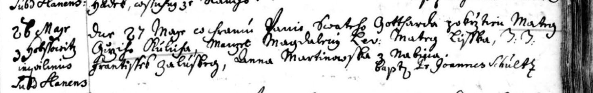

Fara Slaný (kostel sv. Gotharda), 27. 5. 1752 pokřtěn Matěj, syn Jiřího Kulicha, podruha (inquilinus) z Hobšovic, a manželky Magdaleny; poddaní panství slánského. Kmotr Matěj Liška (?), svědkové František Zalužský (?) a Anna Martinovská z Nabějic (?); křtil P. Jan Schultz. Index Slaný 33: „Kulich Matěj Jiří, Hobšovice 1752“. Náš Matěj, × 1773 Ouholice.
Týká se: Matěj Kulich1752–před 1839, Magdalena† 1752

Text z matriky a překlad
Přepis originálu
Fara Slaný (kostel sv. Gotharda), 27. 5. 1752 pokřtěn Matěj, syn Jiřího Kulicha, podruha (inquilinus) z Hobšovic, a manželky Magdaleny; poddaní panství slánského. Kmotr Matěj Liška (?), svědkové František Zalužský (?) a Anna Martinovská z Nabějic (?); křtil P. Jan Schultz. Index Slaný 33: „Kulich Matěj Jiří, Hobšovice 1752“. Náš Matěj, × 1773 Ouholice.
Překlad
Fara Slaný (kostel sv. Gotharda), 27. 5. 1752 pokřtěn Matěj, syn Jiřího Kulicha, podruha (inquilinus) z Hobšovic, a manželky Magdaleny; poddaní panství slánského. Kmotr Matěj Liška (?), svědkové František Zalužský (?) a Anna Martinovská z Nabějic (?); křtil P. Jan Schultz. Index Slaný 33: „Kulich Matěj Jiří, Hobšovice 1752“. Náš Matěj, × 1773 Ouholice.